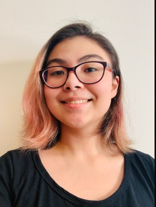

Giulia Zanini

Veterinária
Médica veterinária com formação pela UNESP – Universidade Estadual Paulista Júlio de Mesquita Filho (2017), possui residência em Clínica médica de Carnívoros domésticos pela UFBA (2019), possui mestrado em Medicina Veterinaria com ênfase em nutrição e endocrinologia (2020), pós graduada em Clínica e Cirurgia de Pequenos animais. Há três anos trabalhando em Clínica Veterinária Própria.
Supervisora
Dentro da empresa, desempenha o papel fundamental de empregar aos produtos cores satisfatórias aos animais e prevenir riscos.
Fernanda Alves
Engenheira de produção
Formada em Engenharia de Produção através da USP – Universidade de São Paulo (2016), vasta experiência em Produção de Projetos, Logística e Manutenção, com especialização em Administração de empresas e Gestão de Processos em Ambientes Corporativos e palestrante - UNIVASF. Sendo uma referência dentro do mercado de trabalho.
Manutenção e construção
Analise critíca de construção, através de um olhar minimalista e ambientalista, prezando por produtos resistentes e consistentes.
Naomi Freitas
Analista de Marketing Digital
Formação em Marketing- UNISINOS — Universidade do Vale do Rio dos Sinos (2017), sendo seu público-alvo donos de pets e empresas relacionadas. Possui em cursos de Excel avançado- Clarify, certificado de proficiência em inglês- TOELF, Desenvolvimento Web Full Stack -DigitalHouse (Coding School) e Web Design- Relevo Up.
Gestora de tráfego
Responsável pelas redes sociais.
Beatriz Gil
Psicóloga animal
Psicicóloga formada pela Universidade Federal de Minas Gerais (UFMG), e em Etologia Animal. Pós-graduada em Zootecnica e Biologia, Doutoranda no programa de Ciência Animal da PUCPR e professora pelo INSPA.
Mentora animal
Responsável pela análize personalizada de cores e objetos que estimulem a mente dos animais a serem pró-ativas e atentas.